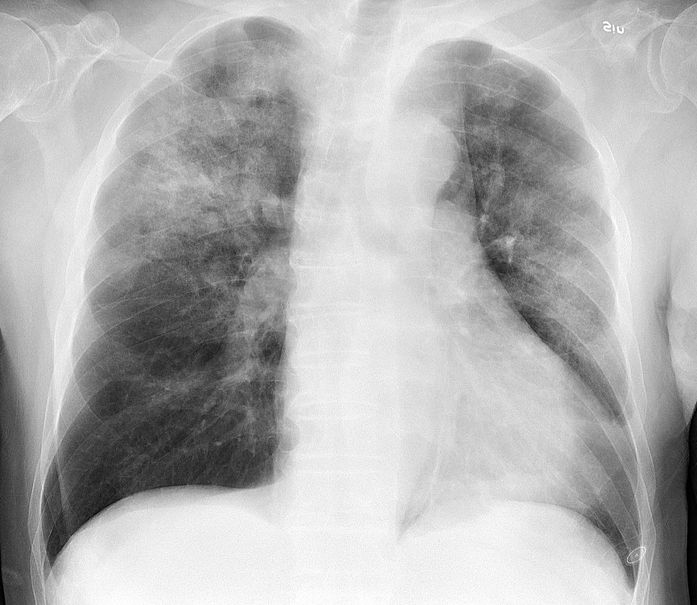
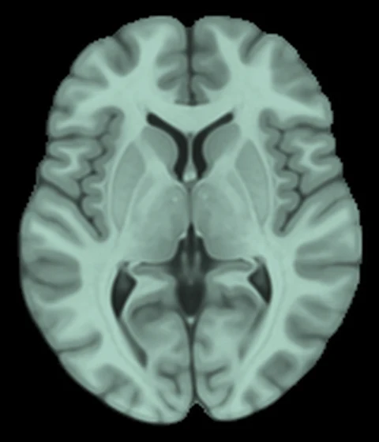

Evidence-grounded healthcare AI
Study how models use images, reports and longitudinal records. Test whether conclusions change when a relevant finding or prior observation is withheld.
Founding proposal
ClinicaAlpha is a proposed cross-institutional research group for AI in healthcare and science. Our aim is to build systems that trace their conclusions to images, data and tool outputs that researchers can inspect.
Explore the research
Radiography
Volumetric MRIResearch agenda
What evidence does a model actually use? We study that question across healthcare and scientific workflows, starting with tasks where someone else can check the answer.
Study how models use images, reports and longitudinal records. Test whether conclusions change when a relevant finding or prior observation is withheld.
Build agents whose data sources, tool calls and intermediate outputs can be inspected and replayed. Use controlled comparisons to test which steps support a finding.
Proposed first project
Compare the answers and sources an agent gives before and after a piece of evidence is withheld. Initial examples include a region in a chest radiograph, a follow-up imaging visit and a tool output from a research workflow.
First public deliverable A small task set, scoring rules and example traces that other groups can rerun.
Selected work
Public projects from prior collaborations, spanning evaluation, data, efficient models and scientific agents.
Scientific agents
Using agents to propose, implement and evaluate neural architecture variants while preserving their design history.
Medical AI evaluation
Evaluating how models use longitudinal, multimodal and volumetric evidence in brain MRI.
Medical model training
Distilling visual-evidence dependency in medical vision-language models.
Open data
Generated whole-brain parcellations with source provenance and case-level quality checks.
Efficient imaging
Preserving anatomical detail and structural relationships in compact 3D segmentation models.
Founding discussion
We’re looking for collaborators who want to bring a healthcare or scientific question, lead an evaluation, or build a workflow that others can reproduce.
Discuss with Qizhen Lan